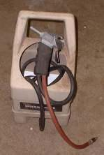
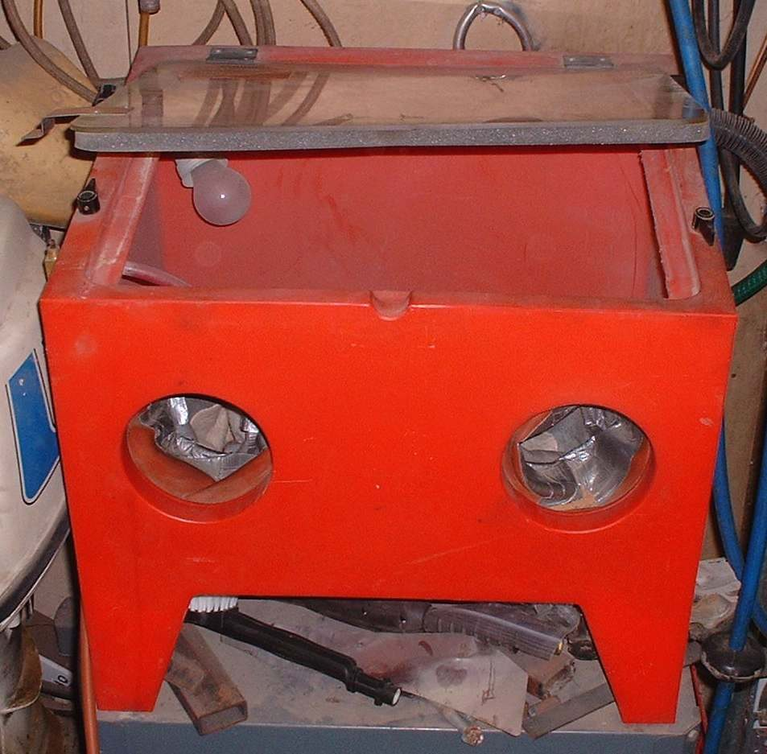
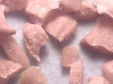
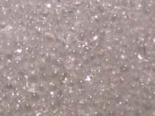
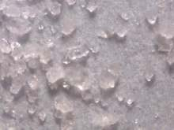
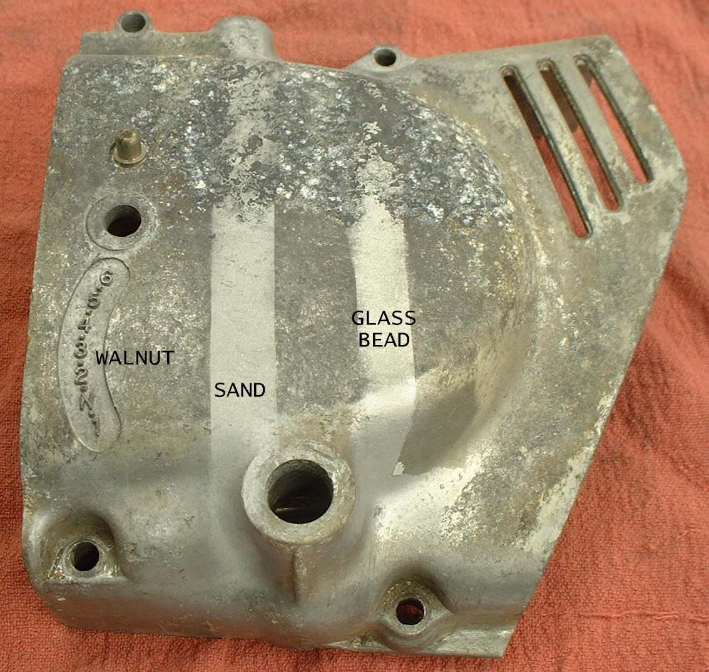
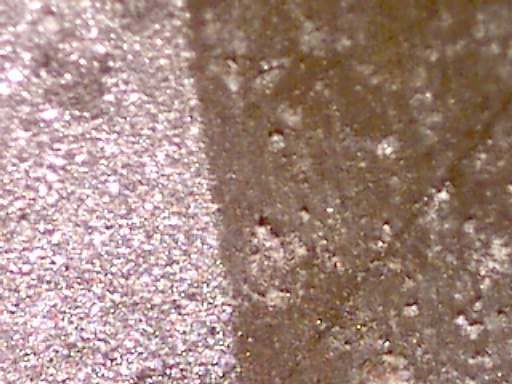

A blaster blows media at a part with compressed air. It cleans corroded parts that solvent and a brush cannot. This is a workshop job because of the dust and the equipment.
Safety
- Wear a respirator and eye protection. Dust from glass and sand harms the lungs and eyes, and the media breaks down into more dust as it is used.
- Blast in a closed cabinet, or in a tent made of plastic sheet, so dust stays out of your mouth, ears and clothes.
- Do not use sand on engine parts. It lodges in every hole and grinds the engine from inside.
Choose the media
- Walnut shell: removes dirt and light corrosion without removing metal or changing the surface. Good for parts that must stay as made.
- Glass beads: round beads that take off little or no metal and leave a peened, slightly hardened surface. Good for internal engine parts. They rinse out of passages more easily than sand.
- Sand: removes rust and corrosion fastest, but cuts metal, and can wear a hole in a thin part. Keep it for heavy frames and steel parts, away from engines.
Steps
- Clean the part first, using Clean engine parts safely with solvent.
- Plug threaded holes, oil passages and bearing seats with tape or plugs.
- Use low air pressure and keep the nozzle moving. Do not hold it on one spot.
- A cabinet is easiest. A part too big for a cabinet, such as a frame, can be blasted in a tent with a portable gun.
- Media can be reused many times. Sweep it up and return it to the hopper.
- Wash the part afterwards with solvent and blow every passage clear.
Check your work
- Surface is clean and even, with no media left in holes.
If it did not fix the problem
- Part still pitted: replace it or have it re-coated.